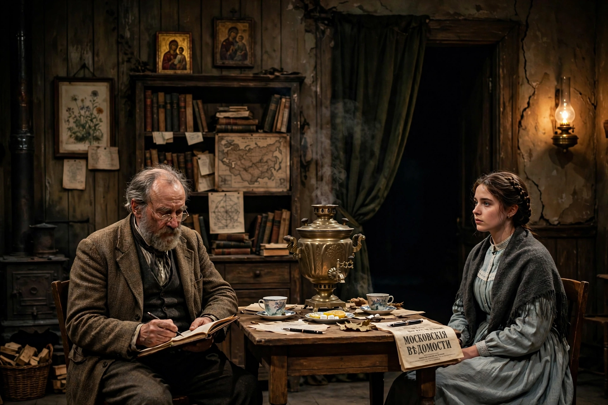

Wikipedia — The Free Encyclopedia

Uncle Vanya (Russian: Dyadya Vanya) is a play by the Russian playwright Anton Chekhov, first published in 1897 and first produced in 1898 by the Moscow Art Theatre under Konstantin Stanislavski. It is a reworking of Chekhov's earlier play The Wood Demon (1889) and is counted among the masterpieces of modern drama.
Ivan Voynitsky — "Uncle Vanya" — has sacrificed his life managing the country estate that supports his brother-in-law, the retired professor Serebryakov, whose scholarly reputation Vanya once idolised. When the professor visits with his beautiful young wife Yelena, the household is thrown into turmoil: Vanya falls hopelessly in love with Yelena, the local doctor Astrov is drawn to her too, and the professor's plan to sell the estate provokes Vanya to a bungled attempt to shoot him. The visitors depart, and the household subsides into its old routines, sustained in the closing scene by Sonya's famous speech affirming that "we shall rest".
The play is a study of wasted lives, unrequited longing and quiet endurance, and an early meditation on environmental destruction through Astrov's defence of the forests. Largely static in plot and carried by subtext and mood, it helped redefine what drama could do; it remains one of the most performed and adapted plays in the world repertoire.